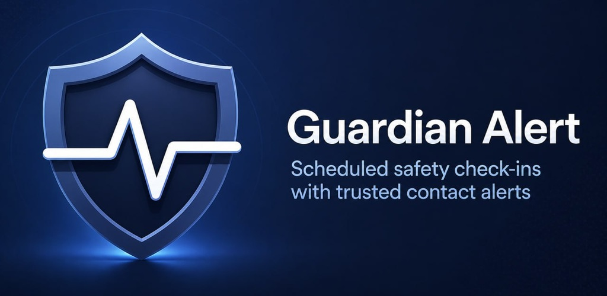

Scheduled safety check-ins with alerts if you miss one.
Guardian Alert helps you stay connected to the people who matter when a missed check-in could mean something is wrong.
Set a schedule, check in before your timer runs out, and let trusted contacts receive alerts if a check-in is missed.
Alerts are triggered by the backend based on your saved schedule, so they can still go out even if your phone is off, out of battery, out of service, or the app is no longer open — as long as the schedule was already created and the backend remains active.
How it works
- Set your check-in interval
- Tap I’m okay before time runs out
- Add trusted contacts
- Escalate alerts over time if a check-in is missed
- Backend monitoring keeps schedules active even if your phone goes offline
Built with consent
Trusted contacts must consent before alerts are enabled. Guardian Alert is designed for transparent, expected safety notifications.
Common use cases
- Living alone and wanting a simple daily safety routine
- Solo hiking, travel, or outdoor activity
- First-date safety planning
- Family check-ins for teens or older adults
- Long-distance relationships where partners want a simple check-in routine
- Shift work, commuting, and long-distance drives
Guardian Alert is a personal safety and accountability tool. It is not a replacement for emergency services.
Built for iPhone and Android
Guardian Alert works on both Apple iPhone and Android phones, with shared check-in, contact, schedule, and alert behavior across both platforms.
Interested in helping test? Email guardianalert.app@agentmail.to and mention whether you use iPhone, Android, or both.